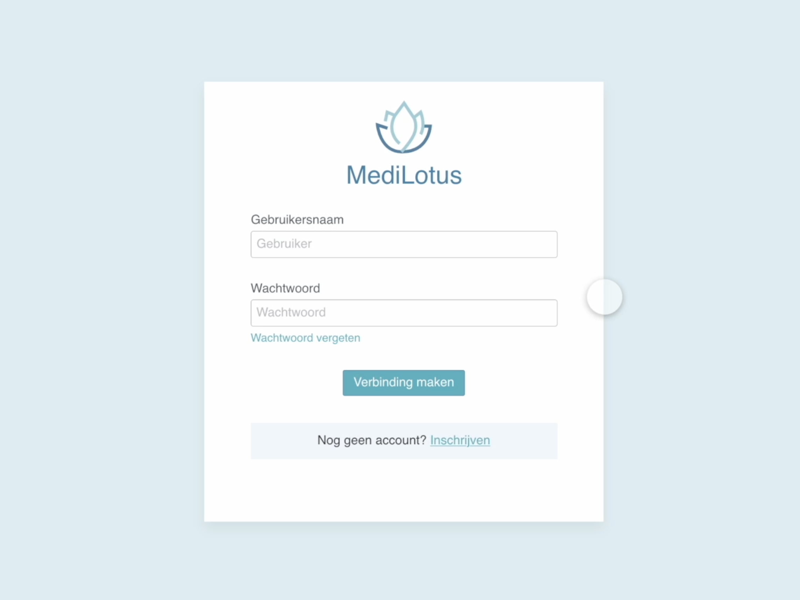

UX/UI
MediLotus: Patient Portal
The Patient Portal and Kiosk work together to enhance the patient experience in healthcare facilities. The Kiosk, located at the hospital entrance, allows patients to easily check in by scanning their identification cards, view appointment details, validate parking, and print patient stickers, all while providing guidance for those who need assistance. Meanwhile, the Patient Portal offers doctors a streamlined dashboard to manage appointments, access patient information, and create prescriptions during consultations. Together, these digital solutions ensure efficient navigation and improved communication within the hospital, catering to diverse patient needs.
TravelPod: Travel Made Easy

In this project, I designed a user-friendly Travel Podcast App using Adobe XD, tailored for a specific audience. The app features a sleek interface optimized for mobile devices, incorporating essential functionalities like user registration, podcast discovery by category, a favorites library, and a seamless audio player. I focused on implementing design principles from Refactoring UI to enhance user experience, ensuring accessibility with intuitive navigation and clear visual hierarchy. The app includes real podcast data and images, providing an authentic and engaging platform for users to explore and enjoy their favorite travel-related content.